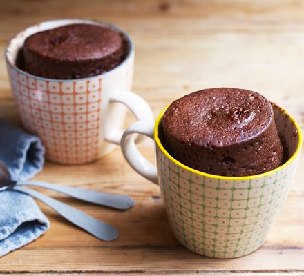

One Minute Mug Cake
easy to make and delicious to eat
Chocolate mug cakes are great when you are running low on time and need a quick fix for your sweet tooth. So if today is one such day, it is time to grab your mug once again because we are here with the perfect recipe for you.